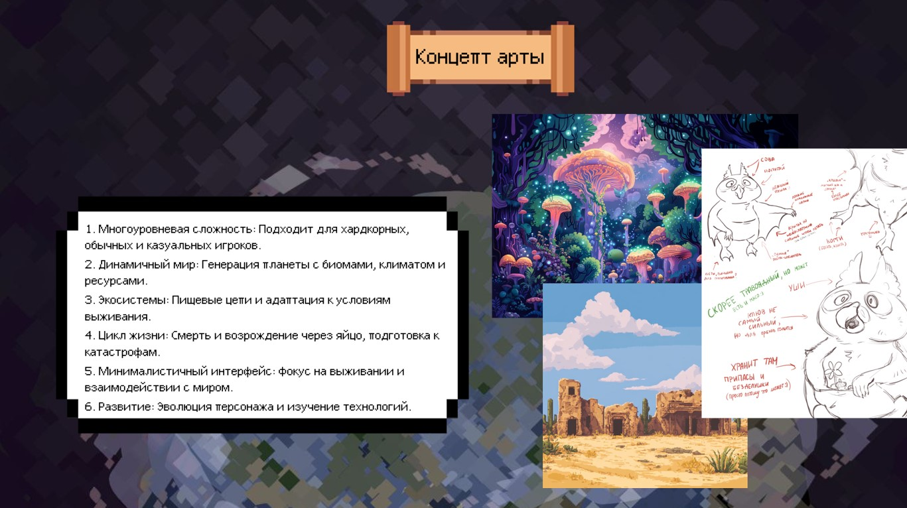
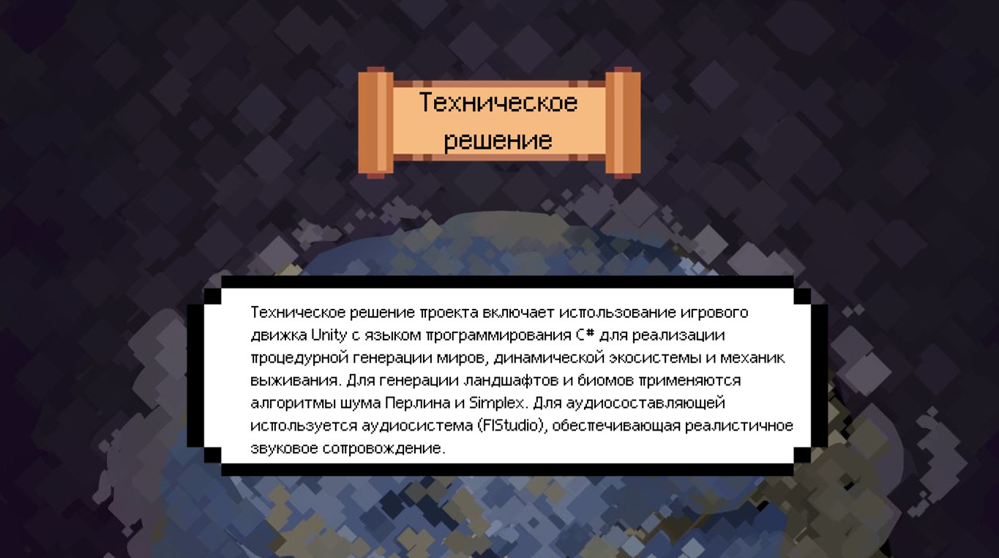

Описание проекта
Игра — симулятор выживания и эволюции в меняющемся мире. Игрок управляет уникальным существом, адаптирующимся к случайно сгенерированной среде. Цель — выжить, развиваться и раскрывать тайны мира.
Игровой процесс
Генерация мира: Каждый раз создаётся уникальный мир с разнообразными биомами, флорой и фауной.
Выживание: Игрок ищет еду, воду, защиту и укрытие.
Адаптация и эволюция: Возможность модификации существа, освоение технологий и участие в естественном отборе.
Взаимодействие с миром: Исследование видов, симбиотические отношения и влияние на экосистему.
Развитие мира: Изменения в экосистеме и циклы жизни существ.
Смерть и перерождение: Перерождение сохраняет некоторые черты существа.
Основные особенности
Процедурная генерация: Уникальные миры каждую игру.
Реиграбельность: Каждая сессия непредсказуема.
Динамическая экосистема: Флора и фауна реагируют на действия игрока.
Баланс эволюции: Улучшения в одном аспекте требуют ухудшений в другом.
Исследование и развитие: Игрок изучает мир и его законы.
Цели игрока
Игроку необходимо выжить, адаптироваться и эволюционировать, раскрывая тайны окружающего мира.

